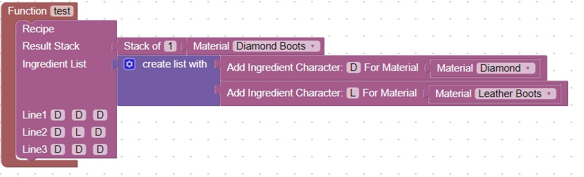
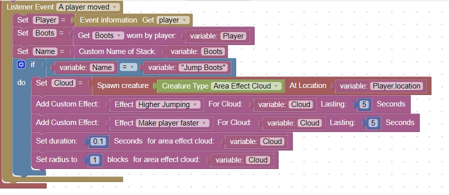
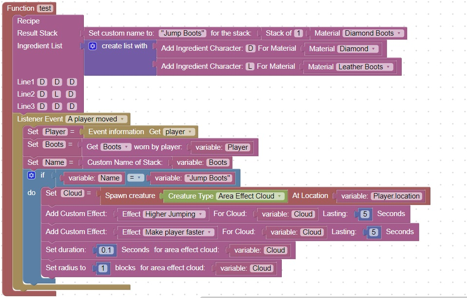

Jump Boots
In this lesson we will:
- Create a recipe for boots
- Give the boots a custom name
- Check if a player is wearing the boots
- Create an area effect cloud around the player when they have the boots on
Create a recipe for the boots
Inside a Function test
Add a recipe:

You can test that the recipe works by giving yourself diamonds and leather boots for ingredients and a crafting table
Give the boots a custom name
Insert the block "Set custom name to for the stack" in between Result Stack and Stack of 1
And change the custom name to "Jump Boots". Note:Remember to use double quotes
Get what boots the player is wearing
Use the Get boots worn by player block located in Items=>Gear
and then the Custom Name of Stack located in Items=>Stack
Create an area effect cloud when the player is wearing Jump Boots
Use a Logic If block to check what the player is wearing
If they are wearing "Jump Boots", create an area effect cloud

Putting it all together
You can use this diagram for reference:
